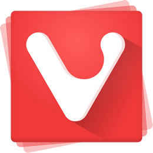

Título, VIVALDI 
O Vivaldi é um navegador gratuito desenvolvido pela Vivaldi Technologies, empresa fundada pelo cofundador e antigo diretor executivo da Opera Software, Jon Stephenson von Tetzchner, o Vivaldi baseado no Chromium. O visual, no entanto, semelhante ao do Opera
navegador tem, como público alvo, utilizadores avançados e antigos utilizadores do Opera Browser
As funcionalidades do Vivaldi permitem agrupar separadores, tirar notas em p⨩nas web, adicionar notas aos favoritos e speed dial para um acesso rápido